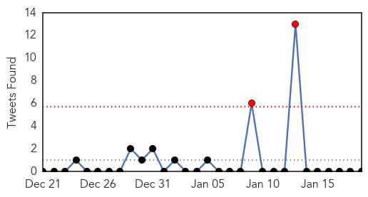
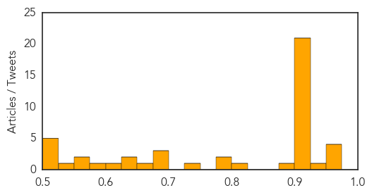
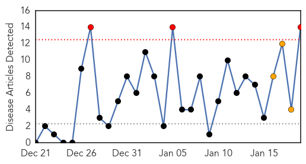

Unknown
30-Day Web Trend
0 alerts, 0 warnings

30-Day Twitter Trend
2 alerts, 0 warnings

Article Locations


Article Confidences
Top Articles:
- 0.971
- Woman, child die of bird flu in Egypt, five deaths so far this year
- 0.963
- Woman dies of H5N1 bird flu in Egypt
- 0.958
- Harsh Flu season
- 0.957
- Woman dies of H5N1 bird flu in Egypt
- 0.943
- Latest News & Updates at Daily News & Analysis
- 0.924
- Former US President commends Ghana
- 0.917
- Chicago Tribune
- 0.917
- Chicago Tribune
- 0.917
- Chicago Tribune
- 0.917
- Chicago Tribune
- 0.917
- Chicago Tribune
- 0.917
- Chicago Tribune
- 0.917
- Chicago Tribune
- 0.917
- Chicago Tribune
- 0.917
- Chicago Tribune
- 0.917
- Chicago Tribune
- 0.917
- Chicago Tribune
- 0.917
- Chicago Tribune
- 0.917
- Chicago Tribune
- 0.917
- Chicago Tribune
- 0.917
- Chicago Tribune
- 0.917
- Chicago Tribune
- 0.917
- Chicago Tribune
- 0.913
- Israel reports bird flu outbreak at turkey farm: OIE
- 0.910
- The world windows to Thailand
- 0.905
- Prez Carter commends Ghana for eliminating Guinea worm
- 0.896
- Zimbabwe Rolls Out Another Mass Drug Scheme to Curb Bilharzia
- 0.801
- Co-Op City Linked to Legionnaires' Disease Outbreak in New York City
- 0.792
- Fiji Times Online
- 0.777
- Giant Pandas Died of Distemper Virus, China Struggling to Control Deadly Disease
- 0.742
- Veterinarians monitor pig virus that killed millions in 2014
- 0.696
- No rabies outbreak confirmed yet: Dr Okram Ibomcha
- 0.687
- 4 questions about mystery disease killing Sri Lankan farmers
- 0.681
- Mystery kidney killer spreads fear in Sri Lanka
- 0.675
- Prescriptions for Health Sector
- 0.634
- Avian flu found in ducks, chickens, geese near Port Angeles
- 0.633
- Ministry: No cases of infection from eating apples - Nation
- 0.624
- Uncommon but Deadly Virus Strikes Giant Pandas in China
- 0.580
- Mystery kidney disease killing farmers
- 0.570
- Gozitan patients ‘forced by consultants’ to receive chemotherapy in Malta
- 0.550
- Session plénière du CESE: Clôture de la présidence italienne de l’UE et début de la présidence lettone les 21 et 22 janvier 2015
- 0.550
- Scoop InfoPages
- 0.523
- Britain releases K2.6bn to assist Malawi flood victims : AU pledge support
- 0.515
- Infected and undocumented: Thousands of Canadians dying from hospital-acquired bugs
- 0.510
- Diabetes takes disproportionate toll on blacks, Hispanics
- 0.507
- Terry White Chemists Carvedilol (carvedilol) Drug
- 0.502
- No outbreak in FMD-free zone as Philippines bans Namibian beef
Top Tweets:
-
No tweets found for Jan 19, 2015
Swine Flu
30-Day Web Trend
3 alerts, 3 warnings

30-Day Twitter Trend
0 alerts, 0 warnings

Article Locations

Article Confidences

Top Articles:
- 0.999
- Swine Flu Scare Spreads Among City Doctors Now, One Medico Infected
- 0.999
- 3 junior doctors test positive for swine flu
- 0.997
- In Indore, fourth H1N1 death in 19 days
- 0.990
- The Rocky Mount Telegram
- 0.985
- 3 more swine flu deaths in state
- 0.982
- One more die of swine flu in Madhya Pradesh
- 0.982
- 4 deaths due to swine flu in Haryana, 10 more cases reported in state
- 0.979
- One more patient dies due to swine flu in Madhya Pradesh
- 0.965
- 25 fresh cases of swine flu confirmed in Hyderabad
- 0.946
- Swine Flu Awareness Campaign
- 0.944
- How domesticated dogs made Serengeti lions sick
- 0.870
- Healthy citizens rush to get flu vaccines in Hyderabad
- 0.856
- Two new HINI cases reported in Gurgaon
- 0.822
- Telangana Deputy CM asks people not to panic over swine flu
Top Tweets:
-
No tweets found for Jan 19, 2015